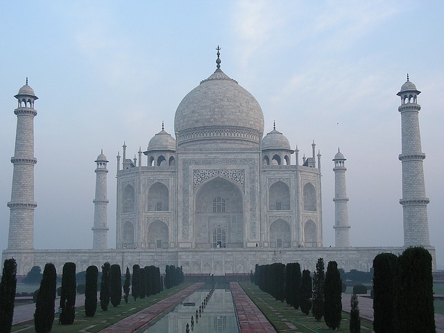

Les traces d'occupation humaine de Taïwan sont anciennes : des restes humains datés au carbone 14 de 30 000 ans ont été retrouvés à Taïwan ; on a donné à ces restes humains le nom d'Homme de Zuozhen. Vers 4 000 avant notre ère, les ancêtres des populations austronésiennes actuelles arrivent à Taïwan en provenance du sud-est de la Chine. Les populations anciennes de Taïwan sont proches génétiquement des anciennes populations de la culture Lapita. Elles partagent également beaucoup d'allèles avec les populations du sud de la Chine de langues taï-kadaï. Ces résultats renforcent l'hypothèse selon laquelle les populations de langue taï-kadaï sont à l'origine de l'arrivée de l'agriculture dans l'île il y a près de 5 000 ans9.

L’Inde occupe la majeure partie du sous-continent indien, qui est placé entre la plaque tectonique de l’Inde et la partie nord-ouest de la plaque indo-australienne. Une partie du territoire des États du nord et du nord-est de l’Inde est située dans le massif de l’Himalaya. Le reste de l’Inde septentrionale, centrale, et orientale est occupé par la zone fertile de la plaine indo-gangétique. Dans la partie occidentale, bordée par le Pakistan du sud-est, se trouve le désert du Thar. L’Inde méridionale se compose presque entièrement du plateau péninsulaire du Deccan, flanqué de deux massifs côtiers au relief accidenté, les Ghats occidentaux et les Ghats orientaux.

La Grèce a des frontières terrestres avec l’Albanie (216 km) au nord-ouest, la Macédoine du Nord (245 km) au nord, la Bulgarie (474 km) et la Turquie européenne (203 km) au nord-est4. Le pays a des frontières maritimes avec l'Albanie, l'Italie, la Libye, l'Égypte et la Turquie (cette dernière est la source du contentieux gréco-turc en mer Égée).